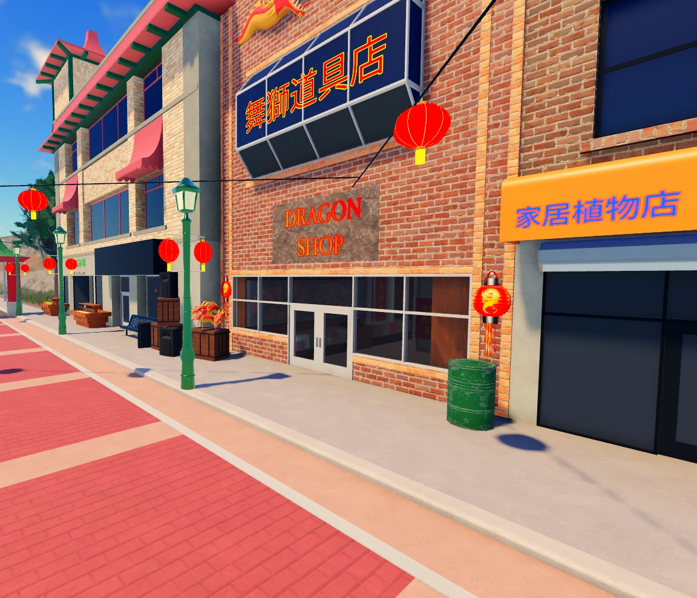

Quiénes somos
Una comunidad de rol en español para ER:LC, ambientada en Ibiza y hecha con ganas de que el rol se sienta de verdad.
Quiénes somos
Una isla,
un servidor
Ibiza Roleplay es una comunidad de rol en español para ER:LC (Emergency Response: Liberty County). Las calles, los barrios y las zonas del mapa llevan los nombres de Ibiza, y todo lo que ocurre dentro, desde tu DNI hasta tu negocio, forma parte de un mismo mundo.
Nos tomamos el rol en serio, pero sin perder el buen ambiente: queremos que cualquiera pueda empezar, aprender y quedarse.
Además, desarrollamos nuestras propias herramientas: un bot de Discord, el CAD y los MDT de los servicios de emergencia, y la Consola de rol, todas accesibles desde la web.

Nuestra historia
Cómo surgimos
Cuatro chicos de distintos puntos de España deciden crear una comunidad de rol para quienes querían rolear y no podían hacerlo en FiveM. Así nace Ibiza Roleplay.
El servidor vive su mejor momento. La comunidad crece y se asienta la base sobre la que se construye todo lo demás.
Ibiza Roleplay se consolida como una de las mayores comunidades de rol serio de ER:LC en el ámbito hispanohablante, con DNI, economía, viviendas y servicios de emergencia propios, y con un bot, un CAD, unos MDT y una Consola de rol hechos por nosotros.
Lo que nos mueve
Nuestros valores
Rol serio
Personajes con DNI, trabajo, casa y consecuencias. Aquí lo que haces importa.
Buen ambiente
Respeto entre jugadores y un staff cercano al que se le puede preguntar sin miedo.
Hecho a medida
Herramientas propias, pensadas para nuestro servidor y no copiadas de otro.
El equipo
Staff team
Las personas que cuidan del servidor cada día.
Nombre
Dirección
Frase corta
Nombre
Administración
Frase corta
Nombre
Moderación
Frase corta
Nombre
Soporte
Frase corta
Borrador. Faltan los nombres, los cargos exactos y, si queréis, una foto o avatar de cada persona. Se pueden añadir tantas tarjetas como haga falta.